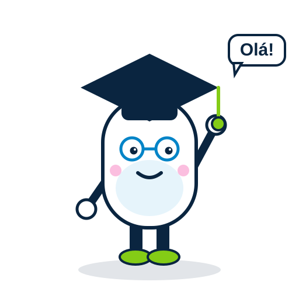

Conversar por turnos
Sala de Aula Online — converse com o professor por voz, com vozes neurais brasileiras. Grátis, quase sem custo.
Aula de exemplo carregada: Misturas homogêneas e heterogêneas (Ciências, 6º ano — EF06CI01: água e sal, água e óleo, água e areia). Edite o tema ou o texto se quiser.
Como funciona
- Você aperta Falar e fala — o celular transforma sua voz em texto, de graça.
- O professor responde por voz, com voz neural brasileira, e escreve os pontos-chave na lousa.
- Os colegas Curioso, Anotador e Pensador entram na conversa de vez em quando, cada um com a sua voz.
- Se preferir, escreva em vez de falar — o campo de texto está sempre na tela.
Por turnos: cada um fala na sua vez (não dá para interromper no meio da frase, como numa ligação — essa é a diferença para a versão ao vivo). As vozes são neurais brasileiras (Microsoft Edge TTS, grátis) e a inteligência é a Maritaca — uma conversa de 20 trocas custa centavos. Se a voz neural falhar, a fala sai com a voz do aparelho e a tela avisa.
← Voltar para a aula com roteiro · Conversar ao vivo (ligação de verdade)